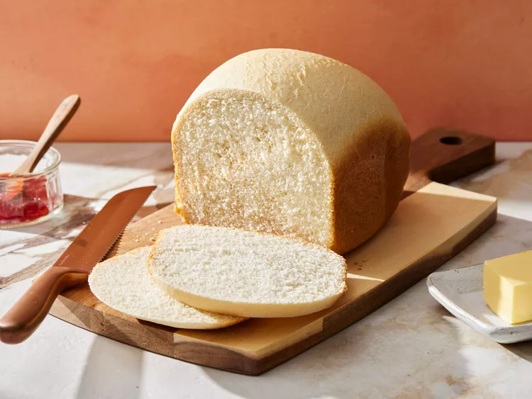

Home
White Bread Recipe

White Bread Recipe
Bread machine white bread. Plain, simple, gets the job done, and tastes great.
Ingredients
- Water
- White Sugar
- Vegetable oil
- Salt
- Bread Flour
- Yeast
Steps
- Place water, sugar, oil, salt, bread flour, and yeast into the pan of the bread machine (or in the order recommended by your bread machine manufacturer).
- Bake on White Bread setting
- Use oven mitts to carefully remove the bread pan from the machine
- Remove bread from the pan and let cool completely on a wire rack before slicing.